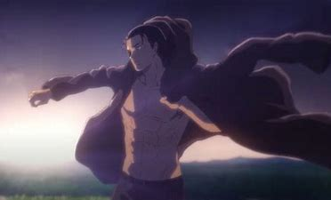

Eren
Eren Jäger est un membre du Bataillon d'exploration et le protagoniste, puis l'antagoniste principal de la série. Il a vécu dans le District de Shiganshina avec ses parents et Mikasa Ackerman jusqu'à la chute du Mur Maria. Au cours de l'incident, Eren assiste, impuissant, à la mort de sa mère par la main d'un Titan. Cet événement suscite chez Eren une haine intense envers les Titans, ce dernier voulant les éradiquer jusqu'au dernier. En l'an 847, Eren, Mikasa et Armin Arlelt, leur meilleur ami, s'enrôlent dans la 104ème Brigade d'entraînement. Tous les trois obtiennent leur diplôme, Eren étant à la 5ème place. Ils rejoignent le Bataillon d’exploration après la Bataille de Trost.